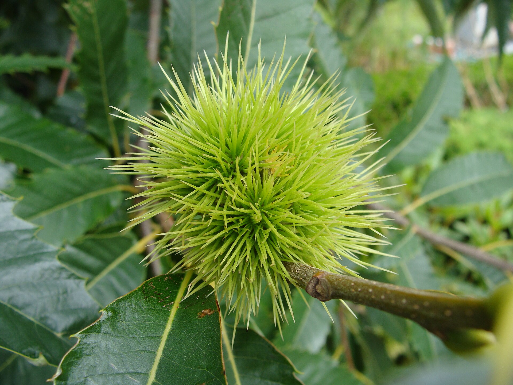

Árvores e Frutíferas
Castanha-portuguesa
Castanea sativa
A castanha-portuguesa é a semente comestível do castanheiro-europeu, uma árvore caducifólia de grande porte. Cada conjunto de castanhas se desenvolve dentro de um invólucro coberto por espinhos, conhecido como ouriço. Após a colheita, as castanhas podem ser assadas, cozidas ou usadas em diferentes preparações culinárias.
- Espécie
- Castanheiro-europeu
- Fruto
- Protegido por um ouriço espinhoso
- Uso
- Consumida assada ou cozida